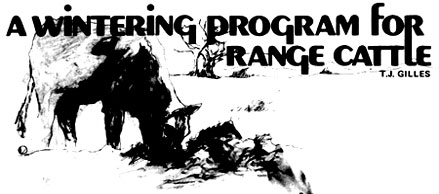
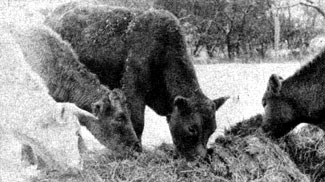
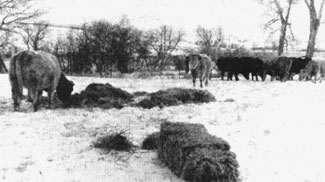

A Wintering Program For Range Cattle
By the
Mother Earth News
editors
September/October 1975

Mature cattle can be wintered on good wheat or barley straw.

A low-lying, brushy area provides some shelter for the herd.
